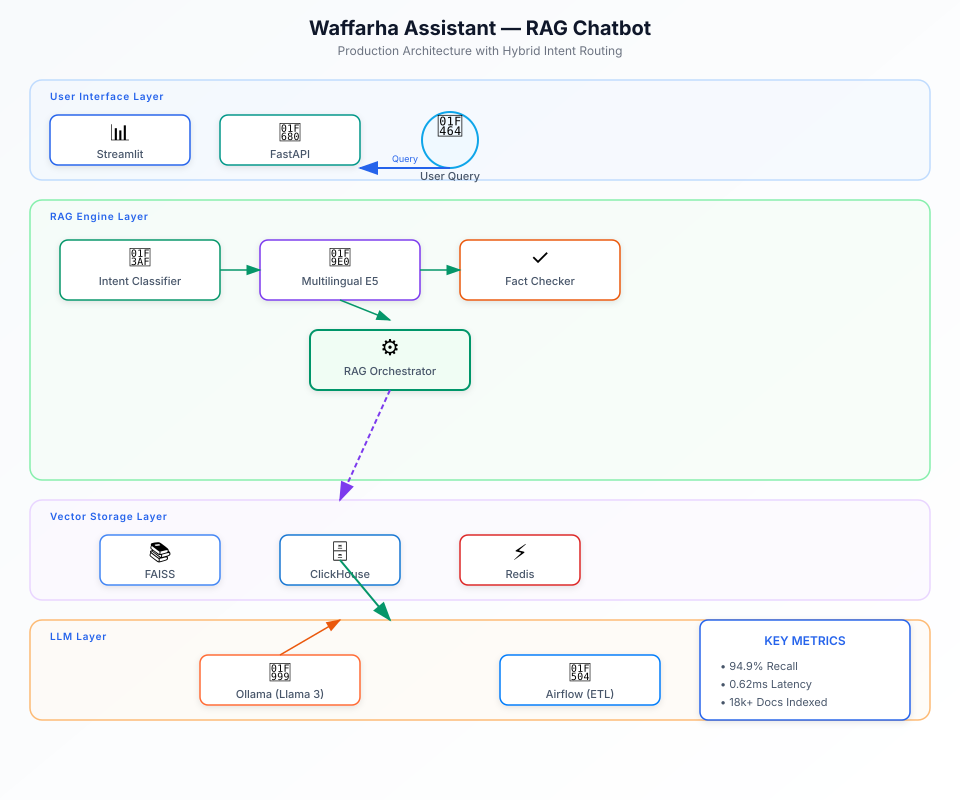

Key Metrics
The Problem
Waffarha, Egypt's leading deals and coupon platform, needed a customer support solution that could handle the volume and complexity of bilingual (Arabic/English) queries while maintaining accuracy and reducing response times. Traditional FAQ systems couldn't handle the nuance of customer questions, and manual support was scaling poorly.
The challenge was threefold: support both languages effectively, provide personalized responses based on user data (coupons, orders, spending), and ensure answers were factually grounded in the knowledge base to prevent hallucinations.
Architecture
Hover or tap any component to see details

Approach & Implementation
- Hybrid Intent Routing: Designed a routing engine that resolves ~75% of queries through deterministic shortcuts (FAQ/offer template matching) before falling back to LLM generation. This combines dense embeddings with lexical token-overlap scoring and cosine-similarity normalization.
- Multilingual Embeddings: Evaluated 4 embedding models (multilingual-E5-large, multilingual-E5-base, BGE-M3, mpnet) across Arabic, English, and Franco-Arabic queries. Selected multilingual-E5-large for production based on 94.9% recall.
- Vector Store Benchmarking: Tested 5 backends (FAISS, Chroma, Qdrant, LanceDB, pgvector) on 18k+ indexed documents. FAISS delivered 0.62ms avg query latency vs. 7.6-65ms for alternatives, while all maintained 85%+ recall.
- Fact-Checking Layer: Built an automated system that extracts verifiable claims (prices, discounts, dates) from LLM-generated answers and cross-checks them against retrieved sources, stripping unsupported claims.
- Personal Queries: Implemented live ClickHouse lookups for user-specific data (coupons, orders, spending history) routed away from the vector index to keep PII out of embeddings and ensure fresh results.
- Automated Ingestion: Created Airflow DAGs for scheduled ingestion from MySQL and ClickHouse, deduplication by content hash, SCD2 versioning, and vector index updates on data changes.
- CI Integration: Built an evaluation harness with 110+ test cases across 7 categories (offers, FAQs, personal queries, follow-ups, catalog, negative/hallucination, Arabic). Holds 96.4% pass rate with exit-code gating.
- Docker Deployment: Containerized the full stack (FastAPI, Streamlit, Airflow, vector DB, Redis) with model-baked images for zero-runtime-network production deployment.
Challenges & Solutions
Challenge: Hallucination in LLM Responses
LLM-generated answers sometimes included fabricated prices or incorrect offer details not found in the knowledge base.
Solution: Automated Fact-Checking
Built a claim extraction layer that identifies verifiable assertions in LLM output and validates them against retrieved source documents. Unsupported claims are stripped before response delivery.
Challenge: Bilingual Query Complexity
Users mixed Arabic, English, and Franco-Arabic (Arabic in Latin script) in single queries, making standard embedding models ineffective.
Solution: Multilingual E5 + Lexical Boost
Selected multilingual-E5-large embeddings and added a lexical token-overlap bonus to improve retrieval for mixed-language queries. Also implemented language detection to route queries to appropriate processing paths.
Challenge: Personal Data Privacy
User-specific queries (coupons, orders) needed to be answered accurately but shouldn't be stored in the vector index alongside public FAQ data.
Solution: Intent-Based Routing
Personal queries are detected and routed directly to ClickHouse for live lookups, bypassing the vector store entirely. This keeps PII out of embeddings and ensures data freshness.
Outcome
The Waffarha Assistant is now in production serving customer support queries. The hybrid routing approach handles 75% of queries without LLM calls, reducing costs and latency. The fact-checking layer has significantly reduced hallucination rates, and the CI-integrated evaluation harness ensures regression prevention.
The modular architecture allows easy addition of new vector backends and embedding models through configuration changes, making the system adaptable as requirements evolve.